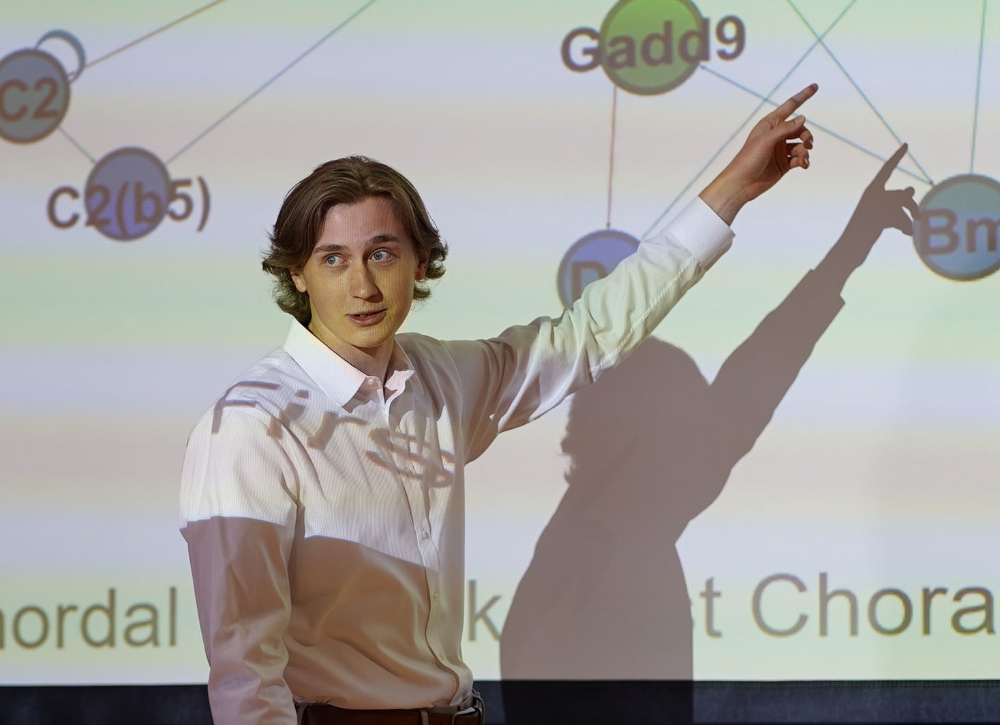

Welcome to my webpage.
My name is Levi. I'm a research assistant at MIT working on mathematical models of social systems.
Following this position,
I intend to do a PhD in mathematics focusing on probability and stochastic processes.
Professional BiographyCurrent Position:
Predoctoral Technical Associate, 06/2023 - 06/2024 Education:
B.Sc. in Applied Mathematics, 08/2019 - 05/2023 Previous Positions (Select):
Undergraduate Complexity Researcher, Summer 2022
Policy Fellow, Summer 2021 |
 Resume/CV | |
|---|---|---|
|
|
|
|---|
|
|
|
|---|